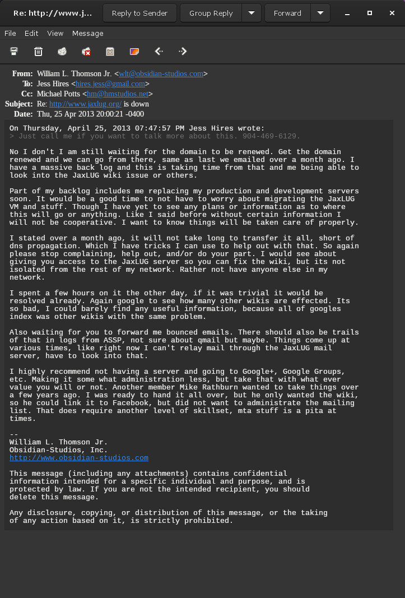

Gene Cronk

This aims to cover the history of Gene Cronk in the past unofficial Jacksonville Linux Users Group community. There are people in this world who have been long time members of communities that have not benefitted from their involvement, they failed to attract new members, failed to provide proper stewardship, failing to ever step up in meaningful ways, hosting, admin, etc. never using their skills for the benefit of the community. People with a history of public and private rudeness towards others in the local community. Gene is everything that the group should never have been!
Just like Gene, the group failed to ever advance, and Gene is a direct reason why, and he has held back the Jacksonville Linux community for far to long, and he has failed to advance in his own career; you reap what you sow, and Gene's rudeness and lack of skills has plagued his own career. Gene presented at Defcon in 2004, the year his career peaked, and never again since.
Gene has a few monikers, Github handle quigongene, Gitlab handle gene27, Discord handle Gene aka quigongene (499749441335721995), and for reference, Gene's LinkedIn profile.
This is a work in progress as Gene's community actions and conduct continue. Gene has long surpassed his utility, if one ever existed, to the community and it is time for him to step aside, and cease all Jacksonville Linux community activities!
JaxLUG Start
Given there are no rosters or way of tracking in the past unofficial Jacksonville Linux Users Group it is hard to determine the exact date when Gene showed up, but the first publicly confirmable record is when he sent this reply to a post on the mailing list on August 3rd, 1999; most of the reply is off subject, a great example. Further reference examples are Gene's next two replies, this other reply on August 9th, 1999 and a final reply on the same thread. None are of substance, and this is reflective of the quality of Gene's contributions spanning 26 years.
This establishes Gene showing up sometime in 1999. It would not be until 2004 that Gene would first present, which per the poorly maintained meeting history page occurred on February 25th, 2004, with a follow up presentation the next month on March 3rd, 2004. It is possible, and highly likely, that Gene presented before this date, sometime after his arrival in 1999.
Gene is the oldest active member, 26 years and counting as of end of 2025, and that has NOT been a good thing for anyone including Gene; he arguably, is the worst most destructive member since his start!
2004 Defcon
Gene's career peaked in 2004, this is proven by his sole presentation at DefCon 12, where Gene was a speaker giving a IPv6 primer, and per that mentions Gene is best known for his work on the, North American IPv6 Task Force, that seems to be his most substantial accomplishment ever.
It is theorized, that since Gene was not able to speak again at DefCon, despite continued attendance, if not every year since and likely prior, Gene sought to bring the stage to him via B-Sides Jax conference. It is not known how far Gene's connection to B-Sides Jax goes, but B-Sides is an offshoot of DefCon, where Gene never spoke again; given international attendance with many security experts, PhDs and non, this is telling!
There is a video of that DefCon 12 presentation on Youtube, that has some 175 views in 11 years... Likewise, Gene's local presentations have had few viewers and he has never attracted members, and instead he repulsed them!
Events like DefCon, make or break careers, and Gene's was not made there!
Employment Help

On numerous occasions another, William L. Thomson Jr. went out of his way to help Gene obtain employment, even soliciting the help of another, Kyle Gonzales, who at the time was a major account representative at RedHat handling accounts such as FedEx and UPS.

Unfortunately, neither Kyle nor William were successful, and you can see, even William was shocked Gene was out of work long ago, when replying to this job posting of William's, which is really a unicorn; the amount of times members sought to hire other members via public job postings. Had William's business, and things in Jacksonville gone otherwise, this would have been a very positive trend to start!
Because of people like Gene, Jacksonville is not a good city to try to grow a Linux business! In part, because of Gene there, is not a history of Jacksonville Linux enthusiasts helping others with employment. That is not something William is proud of and William was working towards a different more fruitful culture than the one that prevailed in all the years since.
Gene has never thanked William for such, and anytime William has mentioned never receiving thanks for the very kind, time consuming, unheard of in the community, assistance with employment, Gene is rude as he always has been; at least Gene is consistently rude. It is not like Gene ever referred business to William or anything to benefit William; to return the favor, pay it forward, etc. Gene is always happy to take, happy to complain, happy to demand others do things he never has, all for the benefit of Gene!

It is not surprising to William that Gene's career has not gone where it should have nor that Gene still conducts himself in such rude and unprofessional ways, acting as if he is some expert, that real experts like William, literally seek to avoid. Gene has no idea the harm he has done and continues to do!

What is so wrong about a Linux group seeking to get others in the group employed? Why is William so evil for simply trying to help Gene, a fellow Linux enthusiast, obtain employment?
How many are currently looking for employment, and how this could really have benefitted the entire community, to start such a pay it forward culture, helping lift each other up, trend. Rather instead, Gene prefers to beat people down, as he has done repeatedly to William, who simply sought to help him out. This is why Gene dislikes William, through no fault of William.
Haters will always hate! No good deed goes unpunished...
JaxLUG Leader
The past unofficial Jacksonville Linux Users Group never maintained leadership records, based on current knowledge at the time of writing, despite being the oldest active member, Gene has never stepped up to fulfill the top leadership role!
Per this post, where Gene's history of rudeness is on display, Gene claims to be the "vice president", is the closest he ever got. That is the year, 2004, that the group became unofficial, having had a legal entity Florida document number N03000001417 in 2003, dissolved in 2004, and Gene was never on file. The first example of Gene's failure in duties and stewardship, being the "vice president" in 2004, it was Gene's responsibility to keep the legal entity going, and rather than update, it was dissolved. Thanks Gene!
Gene later held the role of "secretary" in 2011 per this post where a recruiter was asking who the "president" was because that information was not made known publicly! It is not known at the time of writing what other fake titles Gene may have possessed in his 29 years.
Gene has conducted a hostile take over and exerted his "authority" over matters, despite him lacking any such role or title; Gene being one who prefers the fake meaningless titles, as he so quickly, and expeditiously took the realm and made this post announcing sweeping changes, amounting to a coup d'état.
JaxLUG.org Transfer

Gene had an issue with another member, William L. Thomson Jr. over control of JaxLUG.org DNS record. William had by default became the systems administrator for the group, including having access to JaxLUG.org DNS record, despite two others, Patrick Martin and Chris DeVidal remaining on the DNS record, which Gene or others could have reached out to, Gene blamed, and put this entirely on William. If Gene was a proper steward, William would never had been in control of JaxLUG.org or other things. These are all Gene's failures, directly or indirectly!
William's sole demand, pre-requisite for domain transfer, simply cover, pay for, the upcoming annual JaxLUG.org domain name renewal, and then we can talk about the rest; William had a VM ready to transfer that Gene never made an effort to obtain or host himself. Domain name renewal may seem like a silly request, but William had been covering the expense on his own for several years, even after stepping down in 2011, they were still seeking transfer in 2013, though it would not be until 2017 that William did transfer the JaxLUG.org domain name to another member Dan Bidleman.

William was right all along, as the group lost JaxLUG.org in 2023, covered in the Story of JaxLUG.org; failing to simply keep the domain name renewed!
William's initial concern, and clearly, the main issue for the group. Even with multiple people, they lost the JaxLUG.org domain name for simply failing to pay the bill, respond to numerous email notices. One of many failures that also falls upon Gene being the oldest member, not to mention, it was Gene's fault that William had control over the JaxLUG.org domain.
Why was Gene not on the DNS record instead of William; Gene was senior to William? How did William end up controlling JaxLUG.org instead of Gene? Why was Gene not the systems administrator for the group? Why is William to blame for taking over things that Gene failed to do himself? Why did Gene not contact Patrick or Chris which he knew for longer than he knew William?
Gene was very rude to William in 2014, specifically over the now lost JaxLUG.org domain name, which is ironic, clearly, Gene needs to focus his rage on himself and not others, as what ever William did with JaxLUG.org that upset Gene per his rude response, well William never lost JaxLUG.org, as Gene and others did in 2023!
William made a mistake transferring JaxLUG.org to others who removed him, as he did not Patrick nor Chris, and Gene's rudeness didn't help. Be it not for Gene, William may have never transferred the domain, and there would be no need for the efforts to recover JaxLUG.org, which will cost over $1000.
Thanks Gene! Are you happy now about the lost JaxLUG.org? Still mad at William over the past?
JaxLUG.net Creation
Gene registered and purchased JaxLUG.net on his own accord under some sort of power control hissy fit, in the previously mentioned post despite having never stepped up in any systems administrator or other capacity to help with services such as DNS, mailing list, and/or website/wiki, Gene never did anything to help! Yet Gene, runs off to register a competing domain to JaxLUG.org, to have his ways, to pursue his agenda, the community be damned!
This is all documented in the Story of JaxLUG.net, though details need to be added, as Gene played a major role. Of course, ironic, Gene is no longer fully in control of the domain he purchased, as another was ahead of his phone number on the 2FA list for JaxLUG.net DNS records. Not to mention, they almost lost JaxLUG.net, all covered in the Story of JaxLUG.net.
B-Sides Jax
This section will be completed at a later date, as we further establish Gene's relationship to the B-Sides Jax conference. What is known is that as of 2024, Gene was the legal Assistant Secretary of B-Sides Jax, with Dan Bidleman being the secretary, until November 6th, 2025, when the records were amended to make Gene the secretary removing Dan entirely, all per the B-Sides Jax Florida Corporate filings document number N24000010319.
Gene's connection to B-Side likely goes back to its origin, and again, is all fall out, because Gene was unable to participate in DefCon beyond attending; Gene had to find a stage to promote himself!

What is known is that in 2025, while William was an active Masters in Computer Science student at University of North Florida (UNF), where somehow UNF student Osprey Security Club (OSEC) was the venue sponsor, a connection William has to piece together at a later date, but Gene, an organizer of B-Sides Jax being held at UNF's University Center, was actively working with UNF to block a current student from an event hosted by no students or alumni, other than the philosophy major alumni Dan Bidleman.
No current or past UNF students or alumni, other than Dan who removed himself from B-Sides legal filings, are part of the B-Sides Jax organization, how they ended up at UNF in 2023, when William was there from 2020-2025, is something William is still investigating and UNF will have to explain.
This again speaks volumes to Gene's character and community conduct. The nerve people would have to ban a student from an event held at that student's institution. Of course, the irony, William has never attended B-Sides Jax, nor will he ever. This was wishful thinking on their behalf, but William knows Gene for many years, and just like those who run and attend DefCon, William had no interest in anything Gene was involved with; Gene's career has gone nowhere, especially, with DefCon!
Goodbye Gene
After some 26 years, all the websites/wiki's lost, the mailing list destruction, the domain name issues, losing JaxLUG.org, almost losing JaxLUG.net, never actually being a systems administrator or fulfilling any true sense of stewardship. It is time for Gene Cronk to say Goodbye!
We are saying Goodbye to Gene, and we request he cease any and all efforts in Jacksonville, Florida Metropolitan Area with regard to Linux. Gene claims to be a security expert, he was the president of the Jacksonville 2600 club, he is affiliated with B-Sides Jax, Gene is a father and a family man, he has plenty of other obligations to consume his time. Gene needs to leave the Linux community alone!
Gene is no Linux expert! Gene is no steward for the Jacksonville Linux Community! Gene's own public history, the history of issues, and all the rest that took place in the 26 years Gene forced his unwanted presence on others, and drove who knows how many away. Gene never attracted others, and he has failed in ever possible way, including being a decent person to your fellow local citizen, your fellow local Linux enthusiasts. Especially, the ones like William, doing the things Gene CHOSE to never do!
Goodbye Gene Cronk!